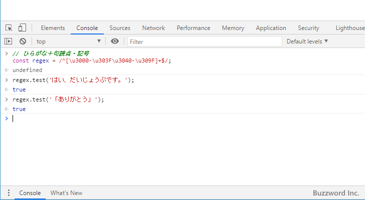

漢字、句読点、記号にマッチする正規表現
正規表現のサンプルの中で「漢字」にマッチする正規表現について解説します。また句読点は漢字には含まれないため「句読点」や「記号」とマッチする正規表現についても併せて解説します。
「漢字」にマッチする正規表現
「漢字」とマッチするパターンの中で Unicode のコードの範囲を使用する方法をご紹介します。日本語(および中国語や韓国語)で使用される主な漢字は CJK 統合漢字と呼ばれるものにまとめられており、 Unicode のコードの範囲で次のように指定することができます。
\u4E00 から \u9FFF
CJK 統合漢字に含まれていない漢字については、 CJK Unified Ideographs Extension A から G にて追加されています。また CJK 互換漢字 というものもあります。必要であればこれらで使用している Unicode のコードの範囲も追加されてください。
CJK Unified Ideographs Extension A \u3400 - \u4DFF CJK Unified Ideographs Extension B \u20000 - \u2A6DD CJK Unified Ideographs Extension C \u2A700 - \u2B734 CJK Unified Ideographs Extension D \u2B740 - \u2B81F CJK Unified Ideographs Extension E \u2B820 - \u2CEAF CJK Unified Ideographs Extension F \u2CEB0 - \u2EBE0 CJK Unified Ideographs Extension G \u2CEB0 - \u2EBE0 CJK 互換漢字 \uF900～\uFAFF
漢字だけで構成される文字列にマッチする正規表現は次のようになります。
^[\u4E00-\u9FFF]+$
また CJK 統合漢字に含まれない漢字の中で比較的よく使用される 3 つの文字についてはこのあとで解説する句読点・記号の中に含まれます。
\u3005?々 // 同上記号・同の字点 \u3006 〆 // 締め \u3007?〇 // 漢数字のゼロ
漢字＋上記の3つを追加した文字だけで構成される文字列にマッチする正規表現は次のようになります。
^[\u4E00-\u9FFF\u3005-\u3007]+$
サンプル
JavaScript を使って簡単な正規表現のサンプルを作成してみます。
const regex1 = /^[\u4E00-\u9FFF]+$/;
regex1.test('東京都千代田区');
--> true
regex1.test('快晴の一日');
--> false // 範囲外の文字
regex1.test('虎視眈々');
--> false // 範囲外の文字
const regex2 = /^[\u4E00-\u9FFF\u3005-\u3007]+$/;
regex2.test('虎視眈々');
--> true

「句読点」と「記号」にマッチする正規表現
句読点の '。' や '、' は漢字には含まれません。句読点や記号は Unicode のコードの範囲で次のように指定することができます。
\u3000 から \u303F
上記の範囲には、先ほど漢字のところで例として表示した '々' 、 '〆' 、 '〇' の他に '?' (くの字点) や '?' (二の字点) などが含まれます。
句読点や記号だけで構成される文字列にマッチする正規表現は次のようになります。
^[\u3000-\u303F]+$
サンプル
JavaScript を使って簡単な正規表現のサンプルを作成してみます。
// ひらがな＋句読点・記号
const regex = /^[\u3000-\u303F\u3040-\u309F]+$/;
regex.test('はい、だいじょうぶです。');
--> true
regex.test('「ありがとう」');
--> true

-- --
正規表現のサンプルの中で「漢字」「句読点・記号」にマッチする正規表現について解説しました。
( Written by Tatsuo Ikura )

著者 / TATSUO IKURA
初心者～中級者の方を対象としたプログラミング方法や開発環境の構築の解説を行うサイトの運営を行っています。